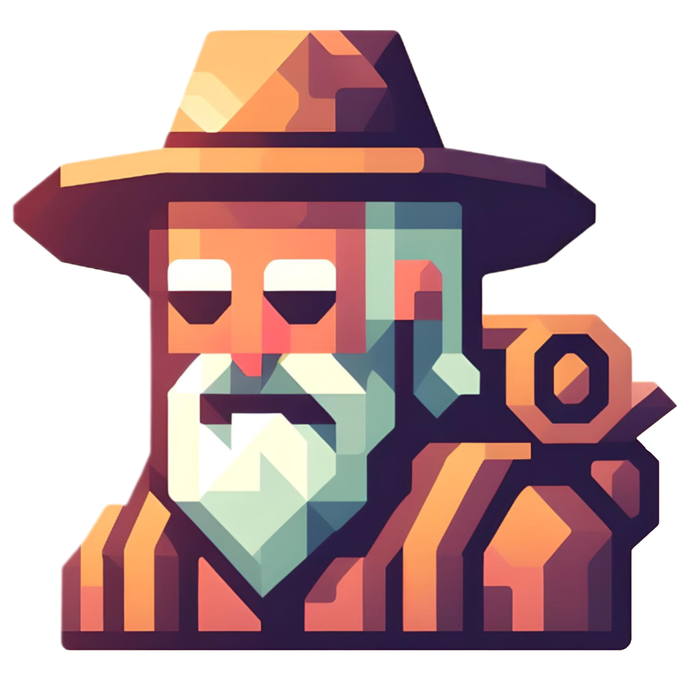

📦 Download   :      |   📜 License   :  
  |   📜 License   :   
🌐 Supported Platforms   :      |  
  |      |  
  |   
📡 Supported Protocol   :      |  
  |   
:placard: Table of Contents
- Description
- Running
- Docker
- Documentation
- Latest Release
- License
- Contacts
:pencil: <strong>DESCRIPTION</strong>
Flakkari is a UDP/TCP server and client library initially developed for the R-Type Epitech project and updated for the Video Games course at University Laval. It enables network-based gameplay, supporting multiple games and clients simultaneously through its multi-threaded architecture. The server is designed to handle high concurrency and ensure low latency, making it suitable for real-time multiplayer games. Flakkari also includes features such as game state synchronization, player authentication, and robust error handling to provide a seamless gaming experience.
🎮 Client Library: Flakkari provides a static library (flakkari-client) that can be integrated into your game projects. This library handles network communication, packet serialization, and game state synchronization, allowing you to focus on game logic.
🔄 Auto-Update Feature: Flakkari supports automatic game downloads from remote repositories, allowing the server to fetch and update games dynamically. This feature can be disabled for environments requiring pure MIT licensing.
Flakkari also has a Unity client library to facilitate the development of multiplayer games. This library is available in C# and can be used to connect to the Flakkari server, send and receive messages and manage game events. It is designed to be easy to integrate into existing game projects and provides advanced features to simplify the development of multiplayer games.
[!NOTE] The project is still under development and may not be stable.
:video_game: <strong>GAMES REQUEST</strong>
We provide a game request system that allows you to request a game to be added to the server. To do so, please open an Github Issues. Select the Game Request template and provide the information following the template. We will gladly review your request and add the game to the server if it meets the requirements.
The available games are listed in the [Games](Games) directory. Each game has its own configuration file. The server will load the games from this directory and make them available to clients. The main advantage of this system is that you can add new games without modifying the server code. The server will automatically update the list of available games when it starts or when a new game is added/removed/modified in the remote directory.
And if you want to add a new game, you can follow the Game Configuration guide.
[!WARNING] Before submitting a game request, please make sure that the game you are requesting is not already in the repository. Also, be aware that the game you are requesting must be open-source and must comply with the Code Of Conduct.
</blockquote>
:truck: <strong>RUNNING</strong>
:gear: <strong>ENVIRONMENT SETUP</strong>
Before running the server, you need to set the game directory environment variable:
# Set the games directory environment variable
export FLAKKARI_GAME_DIR="/path/to/your/Games"
# For the current project structure:
export FLAKKARI_GAME_DIR="$(pwd)/Games"
# Or use absolute path:
export FLAKKARI_GAME_DIR="/home/user/Flakkari/Games"
[!NOTE] FLAKKARI_GAME_DIR: This environment variable specifies the default directory containing game configurations. It's used as a fallback when no game directory is provided via command-line arguments.
:rocket: <strong>BUILD AND RUN</strong>
# Clone repository
$> git clone https://github.com/MasterLaplace/Flakkari.git
$> cd Flakkari
# Set environment variable
$> export FLAKKARI_GAME_DIR="$(pwd)/Games"
# Build with XMake (recommended, cross-platform)
$> xmake
# Build both server and client
$> xmake build flakkari-server flakkari-client
# Or build only the server
$> xmake build flakkari-server
# Or build only the client library
$> xmake build flakkari-client
# Alternative: Build with CMake
$> mkdir build && cd build
$> cmake .. && cmake --build .
# Run the server executable
$> xmake run flakkari-server
# Or manually: ./build/linux/x86_64/release/flakkari-server
# Alternative: Run with explicit arguments (no env variable needed):
$> ./build/linux/x86_64/release/flakkari-server -g Games -i localhost -p 8081
# XMake: or on Windows: .\build\windows\x64\release\flakkari-server.exe -g Games -i localhost -p 8081
# CMake: or from build directory: ./flakkari-server -g Games -i localhost -p 8081
Using the Client Library:
client.connectToServer();
Protocol::Packet<Protocol::CommandId> packet;
client.sendPacket(packet.serialize());
auto receivedPacket = client.getNextPacket();
if (receivedPacket.has_value()) {
}
client.disconnectFromServer();
Definition UDPClient.hpp:55
Running the Example Client:
A complete example client is available in examples/client.cpp:
# Build the example client
$> xmake build example-client
# Start the server in one terminal
$> export FLAKKARI_GAME_DIR="$(pwd)/Games"
$> xmake run flakkari-server -g Games -i 127.0.0.1 -p 12345
# Run the example client in another terminal
$> xmake run example-client
# Expected output:
# [CLIENT] Starting Flakkari example client...
# [CLIENT] Connecting to server at 127.0.0.1:12345
# [CLIENT] Connected! Waiting for packets...
# [CLIENT] Press Ctrl+C to stop
Integrating the Client Library in Your Project:
# With XMake
add_deps("flakkari-client")
target("your-game")
add_deps("flakkari-client")
add_includedirs("$(projectdir)") -- For Flakkari/ prefix
# With CMake
find_package(flakkari-client REQUIRED)
target_link_libraries(your-game PRIVATE flakkari-client)
To run the server with
- the games directory:
./Games that contains the games configurations
- the IP address:
localhost
- the port:
8081
expected architecture of the games list directory:
Games
├── Game_01.json
├── Game_01
│ └── config.cfg
├── Game_02.json
└── Game_02
└── config.cfg
:gear: <strong>BUILD MODES</strong>
Flakkari supports two compilation modes to accommodate different license requirements:
🔄 Full Mode (with auto-update) - Default:
# Enable auto-update functionality (default)
$> xmake config --with-autoupdate=true
$> xmake
# Features: Automatic game downloads from remote repositories
# Dependencies: libgit2 (GPL-2.0), libcurl, OpenSSL 3.0+
# License: MIT + GPL dependencies for auto-update feature
🪶 Lightweight Mode (MIT-only):
# Disable auto-update for pure MIT license
$> xmake config --with-autoupdate=false
$> xmake
# Features: Core server functionality only
# Dependencies: nlohmann_json, singleton (MIT)
# License: Pure MIT, no GPL dependencies
[!NOTE] License Considerations: The auto-update feature uses libgit2 (GPL-2.0-only). When enabled, the resulting binary includes GPL dependencies. For commercial use or MIT-only deployments, use --with-autoupdate=false to build a lightweight version with pure MIT licensing.
:hammer: <strong>BUILD COMMANDS</strong>
XMake commands:
# Clean build files
$> xmake clean
# Build in debug mode
$> xmake f -m debug && xmake
# Build in release mode (default)
$> xmake f -m release && xmake
# Build specific target
$> xmake build flakkari-server # Server only
$> xmake build flakkari-client # Client library only
# Install the project
$> xmake install
# Package the project (see packaging options below)
$> xmake pack
# Run tests (if available)
$> xmake test
Packaging options:
# Package both server and client (default)
$> xmake pack -y
# Package only the server
$> xmake f --pack-server=y --pack-client=n -y
$> xmake pack -y
# Package only the client library
$> xmake f --pack-server=n --pack-client=y -y
$> xmake pack -y
# Back to full package
$> xmake f --pack-server=y --pack-client=y -y
The packages will be generated in build/xpack/flakkari/ with names like:
flakkari-full-linux-x86_64-v0.8.0.zip (both server and client)flakkari-server-linux-x86_64-v0.8.0.zip (server only)flakkari-client-linux-x86_64-v0.8.0.zip (client library only)
Alternative CMake commands:
# Create build directory
$> mkdir build && cd build
# Configure the project
(build)$> cmake .. && cmake --build .
# Or configure with Ninja
(build)$> cmake -G Ninja .. && cmake --build .
# Install the project
(build)$> sudo cmake --build . --target install
# Build documentation
(build)$> cmake --build . --target doc
# Build package
(build)$> cmake --build . --config Release --target package
📦 <strong>PACKAGE INSTALLATION</strong>
# Install the package
# For windows systems
(build)$> flakkari-win64.exe
# For macos systems
(build)$> sudo installer -pkg flakkari-macos.pkg -target /
# For redhat based systems
(build)$> sudo rpm -i flakkari-linux.rpm
# For debian based systems
(build)$> sudo dpkg -i flakkari-linux.deb
:earth_asia: <strong>ENVIRONMENT VARIABLES</strong>
| Variable | Description | Example | Required |
FLAKKARI_GAME_DIR | Default directory containing game configurations | ./Games or /path/to/games | Yes* |
[!NOTE] ***Required when:** No game directory is specified via -g/--games command-line argument.
The FLAKKARI_GAME_DIR environment variable serves as a fallback location for game configurations when not explicitly provided through command-line arguments.
:whale: <strong>DOCKER RUN</strong>
# install docker on ubuntu
$ sudo apt-get update
$ sudo apt-get install docker-ce docker-ce-cli containerd.io
# check docker version (optional)
$ docker --version
> Docker version 24.0.7, build afdd53b
# build docker image
$ docker build -t flakkari .
# run docker image
$ docker run -p 8081:8081 -it flakkari
# list docker images
$ docker ps
# stop docker image
$ docker stop <container-id>
# remove docker image
$ docker rm <container-id>
:wrench: <strong>DOCUMENTATION</strong>
Wiki:
For detailed documentation on the Flakkari protocol, see:
:rocket: LATEST RELEASE
:clipboard: Change Log and Security Policy
:scroll: <strong>LICENSE</strong>
This project is licensed under the terms of the MIT License.
License Considerations:
- Core Flakkari Library: MIT License
- Auto-Update Feature: When enabled (
--with-autoupdate=true), includes libgit2 (GPL-2.0-only) dependency
- Lightweight Build: Use
--with-autoupdate=false for pure MIT licensing without GPL dependencies
Copyright © 2023-2024 Master_Laplace.
:mailbox_with_mail: <strong>CONTACTS</strong>
This server project has been carried out by:
ME.inc